Feed post (1)
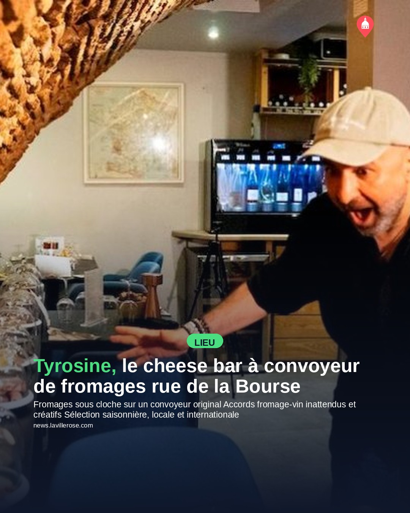
Tyrosine, le cheese bar à convoyeur de fromages rue de la Bourse
Texte sur l'image
Fromages sous cloche sur un convoyeur original
Accords fromage-vin inattendus et créatifs
Sélection saisonnière, locale et internationale
Légende publiée
Vous aimez le fromage autant que le vin ? Tyrosine est fait pour vous. Ce tout nouveau cheese bar de la rue de la Bourse propose une expérience originale : les fromages circulent sous cloche sur un convoyeur, chaque assiette décrite pour vous aider à choisir. Une dizaine de références évoluent selon les saisons, avec des associations audacieuses imaginées par une cuisinière fromagère — Tête de Moine et pastèque, recettes fondantes à venir… L'approvisionnement mêle producteurs locaux et fromages internationaux, dont une sélection signée d'un Meilleur Ouvrier de France basé à Montréjeau. Une adresse qui manquait clairement à Toulouse.
Modifier sur GitHub →
Story (5)

Grande Braderie de Toulouse : 700 commerçants en centre-ville
Modifier sur GitHub →
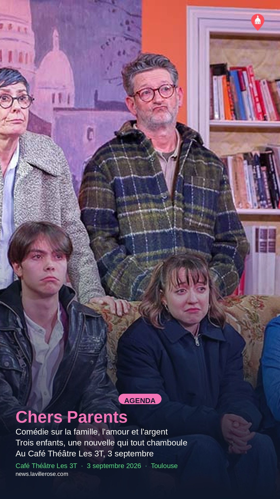
« Chers Parents », comédie familiale au Café Théâtre Les 3T
Modifier sur GitHub →
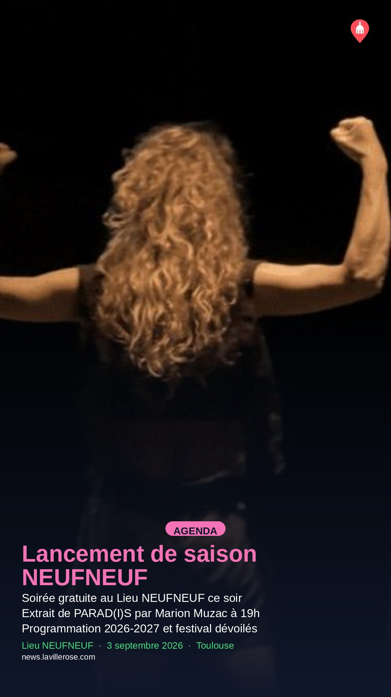
Soirée de lancement de saison au Lieu NEUFNEUF, Sept-Deniers
Modifier sur GitHub →
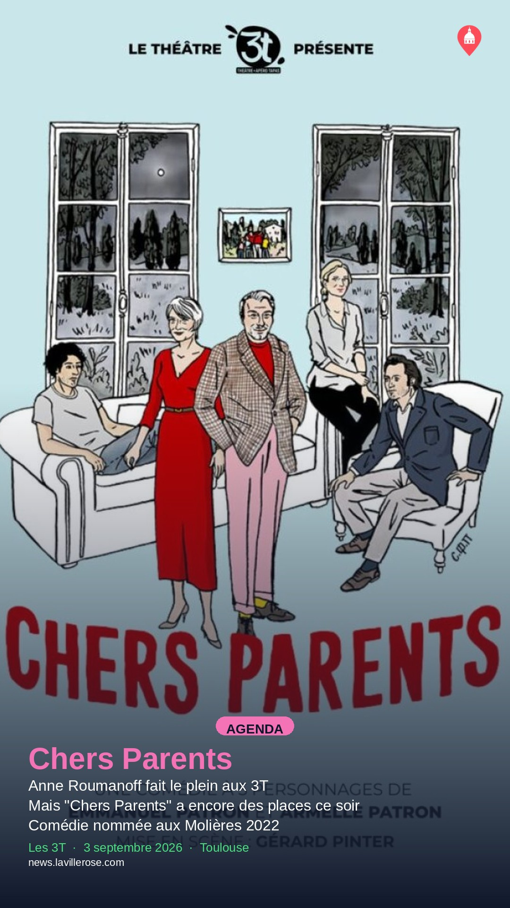
La rentrée des 3T avec Anne Roumanoff et "Chers Parents"
Modifier sur GitHub →
Portes ouvertes de l'Afpa dans les centres du Palays et de Balma
Modifier sur GitHub →
À venir (49)
Événements déjà en base qui redeviendront éligibles à une Story sur une date future,
d'après leur planning actuel. Projection, pas une garantie : elle suppose qu'aucun
nouvel article n'arrive et que rien d'autre n'est publié entre-temps.
2026-09-04
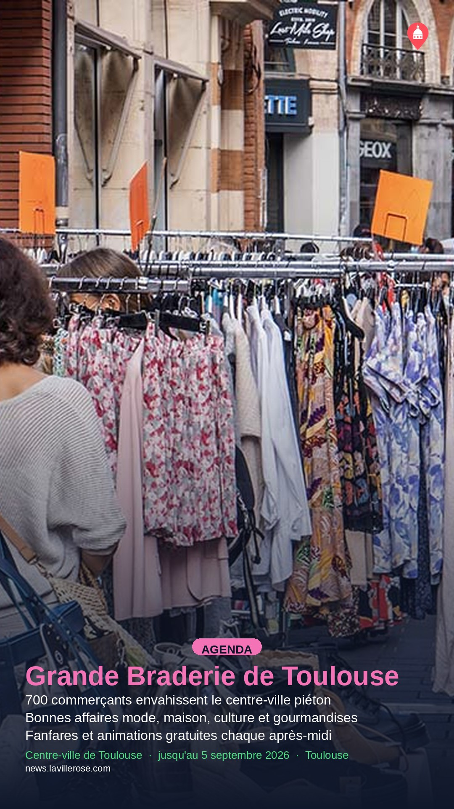
Grande Braderie de Toulouse : 700 commerçants en centre-ville
jusqu'au 5 septembre 2026
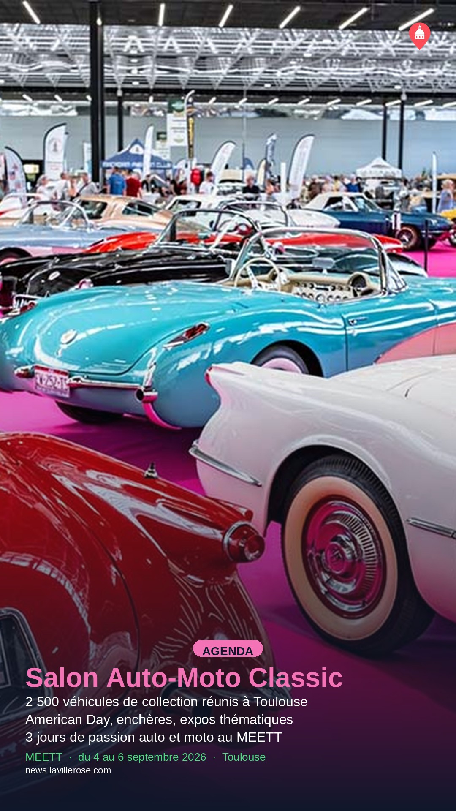
Le Salon Auto-Moto Classic revient au MEETT avec 2 500 véhicules
du 4 au 6 septembre 2026

Brocante des Allées : 3 jours de chine allées François-Verdier
du 4 au 6 septembre 2026
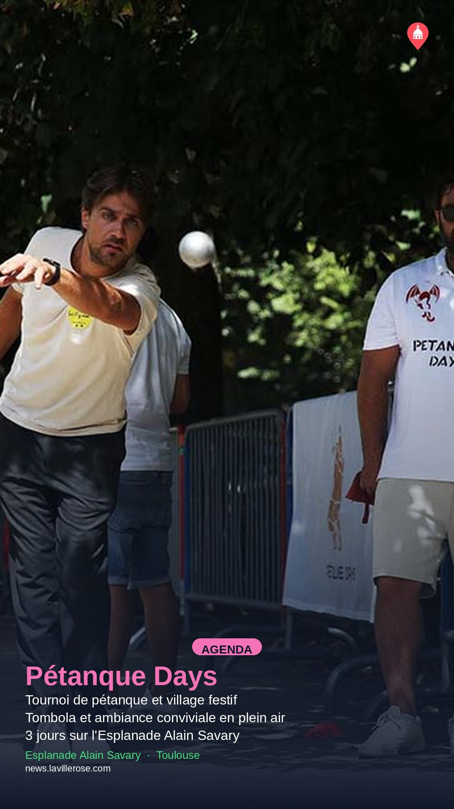
Pétanque Days : tournoi et village festif à Toulouse
du 4 au 6 septembre 2026

À Vies Contraires : pièce feel good au Café Théâtre Les 3T
4 septembre 2026

Venise sous la neige : comédie au Café Théâtre Les 3T
4 septembre 2026

Le Duo Aether mêle jazz et classique à Saint-Pierre-des-Cuisines
4 septembre 2026
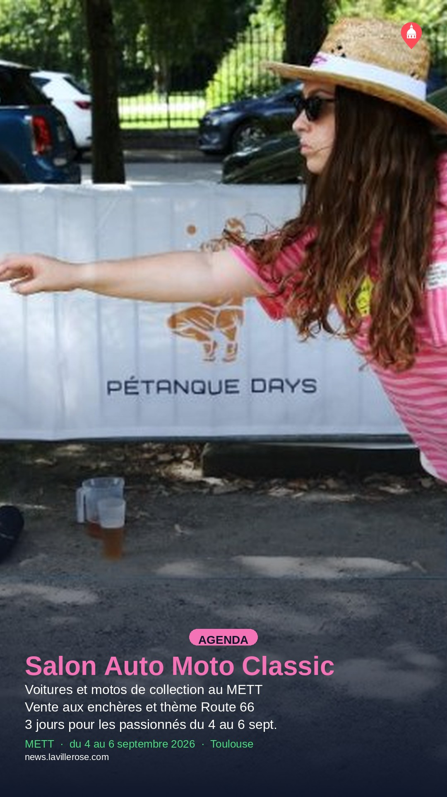
Le Salon Auto Moto Classic revient au METT du 4 au 6 septembre
du 4 au 6 septembre 2026
Le Salon Auto Moto Classic revient au METT du 4 au 6 septembre
du 4 au 6 septembre 2026
2026-09-05
Grande Braderie de Toulouse : 700 commerçants en centre-ville
jusqu'au 5 septembre 2026
Le Salon Auto-Moto Classic revient au MEETT avec 2 500 véhicules
du 4 au 6 septembre 2026
Brocante des Allées : 3 jours de chine allées François-Verdier
du 4 au 6 septembre 2026
Pétanque Days : tournoi et village festif à Toulouse
du 4 au 6 septembre 2026
Le Salon Auto Moto Classic revient au METT du 4 au 6 septembre
du 4 au 6 septembre 2026
Le Salon Auto Moto Classic revient au METT du 4 au 6 septembre
du 4 au 6 septembre 2026

Le Salon d'Antiquités de Terraube revient au château des Galard
du 5 au 6 septembre 2026

Le Grand Banquet du cassoulet revient au Jardin du Grand Rond
du 5 au 6 septembre 2026
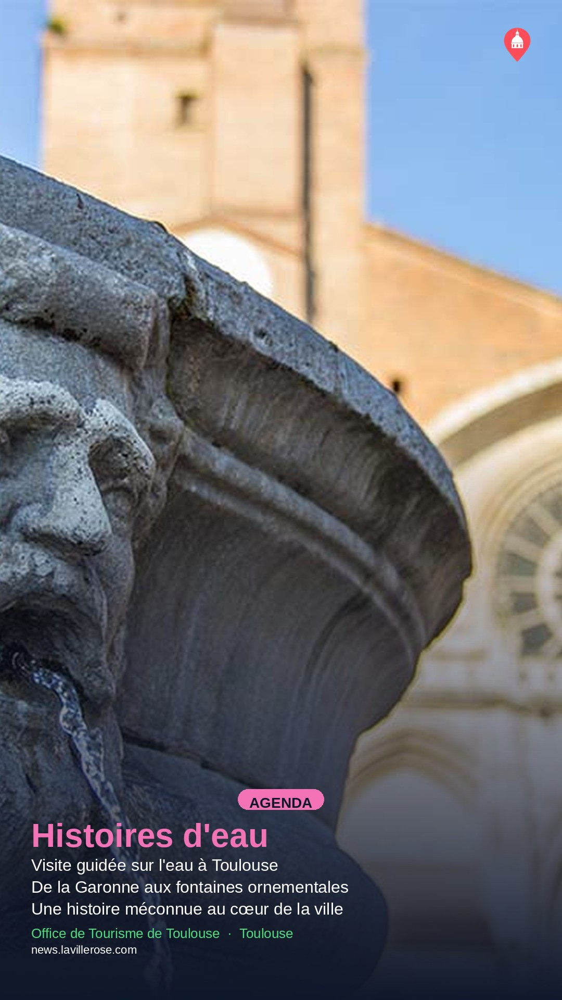
Visite guidée : l'histoire de l'eau à Toulouse
5 septembre 2026
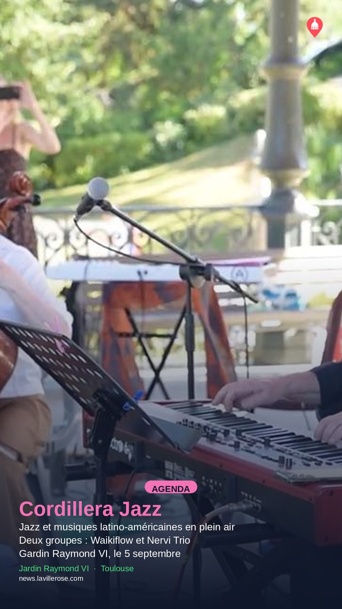
Cordillera Jazz : musiques latinos et jazz au Jardin Raymond VI
5 septembre 2026

"Un Putain de Conte de Fée" : comédie décalée au Café Théâtre Les 3T
5 septembre 2026

MIWA Festival : arts et cultures du Japon au Jardin Japonais
du 5 au 6 septembre 2026
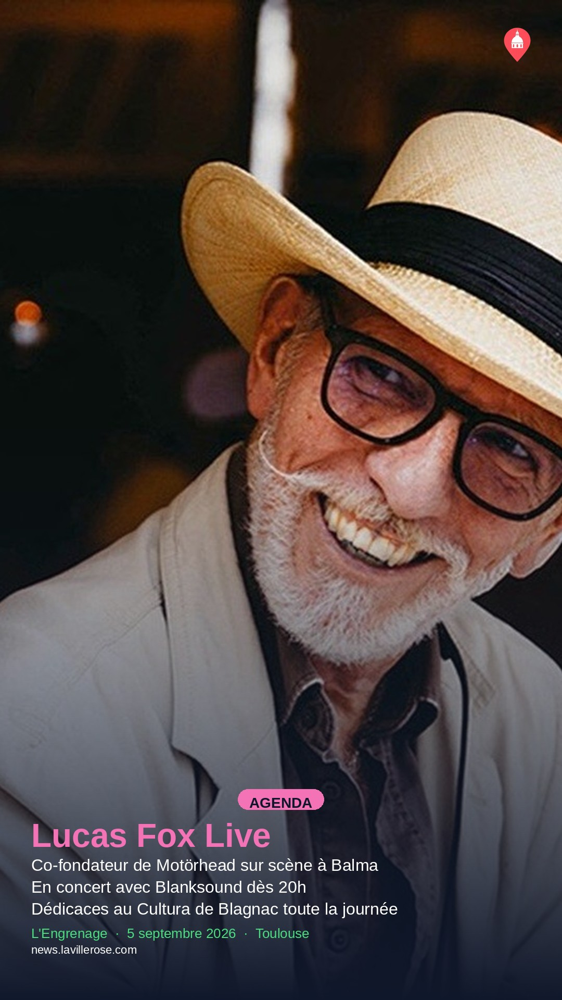
Lucas Fox, co-fondateur de Motörhead, en concert à L'Engrenage à Balma
5 septembre 2026

Piano aux Jacobins 2026 : pianistes internationaux et jazz à Toulouse
du 8 au 30 septembre 2026
2026-09-06
Le Salon Auto-Moto Classic revient au MEETT avec 2 500 véhicules
du 4 au 6 septembre 2026
Brocante des Allées : 3 jours de chine allées François-Verdier
du 4 au 6 septembre 2026
Pétanque Days : tournoi et village festif à Toulouse
du 4 au 6 septembre 2026
Le Salon Auto Moto Classic revient au METT du 4 au 6 septembre
du 4 au 6 septembre 2026
Le Salon Auto Moto Classic revient au METT du 4 au 6 septembre
du 4 au 6 septembre 2026
Le Salon d'Antiquités de Terraube revient au château des Galard
du 5 au 6 septembre 2026
Le Grand Banquet du cassoulet revient au Jardin du Grand Rond
du 5 au 6 septembre 2026
MIWA Festival : arts et cultures du Japon au Jardin Japonais
du 5 au 6 septembre 2026

Fête des vendanges au Domaine de Candie le 6 septembre
6 septembre 2026
Pianomuses : Robert et Clara Schumann à la Chapelle des Carmélites
6 septembre 2026

10 km du Stade : course inclusive au cœur de Toulouse
6 septembre 2026
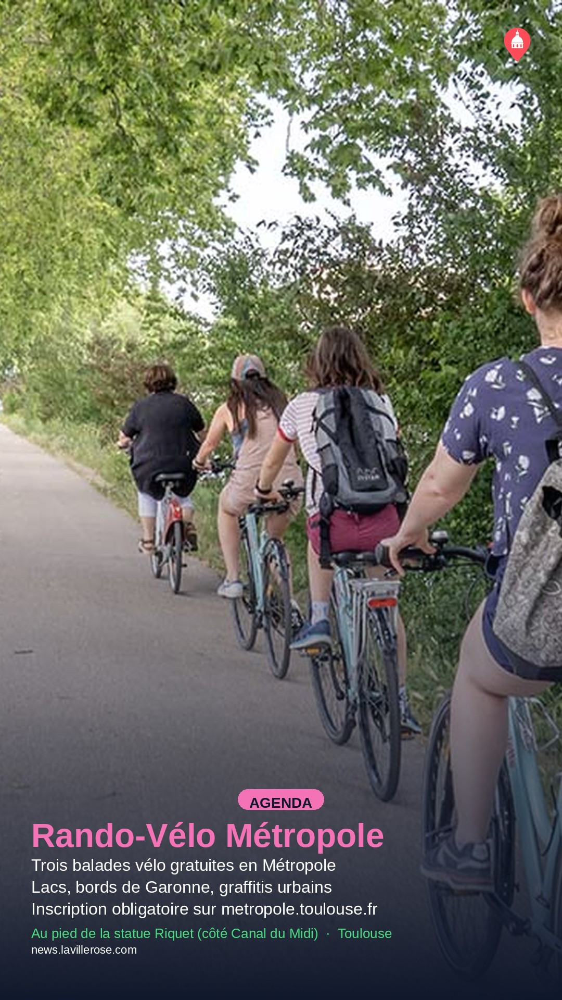
Rando-vélo gratuite : trois sorties en Métropole cet automne
6 septembre 2026
2026-09-07

Hommage à Édith Piaf : spectacle total avec accordéon et ballet
7 septembre 2026
2026-09-08
Javier Perianes au Piano aux Jacobins pour célébrer Manuel de Falla
8 septembre 2026
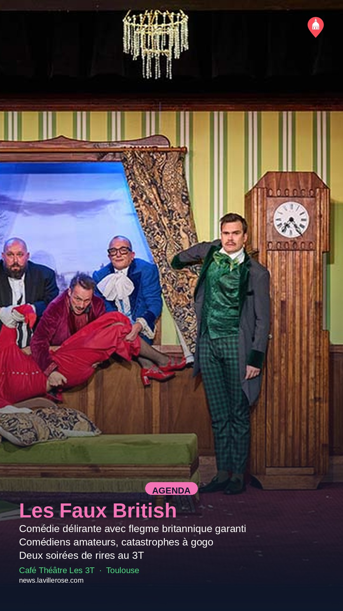
Les Faux British : comédie catastrophe au Café Théâtre Les 3T
du 8 au 9 septembre 2026
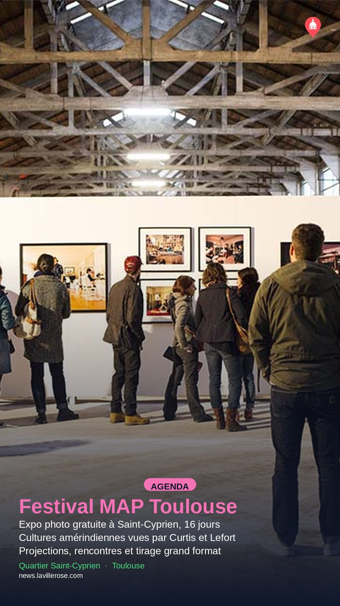
Festival de photo MAP Toulouse dans le quartier Saint-Cyprien
du 11 au 27 septembre 2026
2026-09-09
Les Faux British : comédie catastrophe au Café Théâtre Les 3T
du 8 au 9 septembre 2026
Magdalene Ho en récital de piano au Cloître des Jacobins
9 septembre 2026
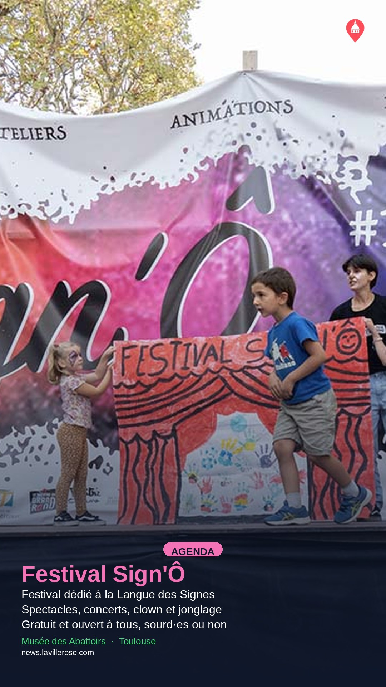
Festival Sign'Ô : la création en Langue des Signes à Toulouse
du 9 au 13 septembre 2026
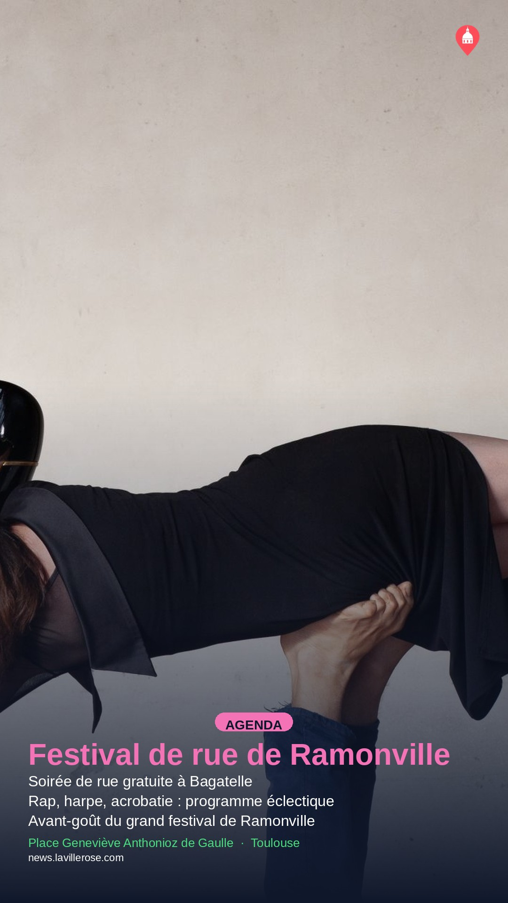
Préambule du Festival de rue de Ramonville place Bagatelle
9 septembre 2026
2026-09-10
Festival Sign'Ô : la création en Langue des Signes à Toulouse
du 9 au 13 septembre 2026
Ilyun Bürkev en récital au Cloître des Jacobins pour Piano aux Jacobins
10 septembre 2026
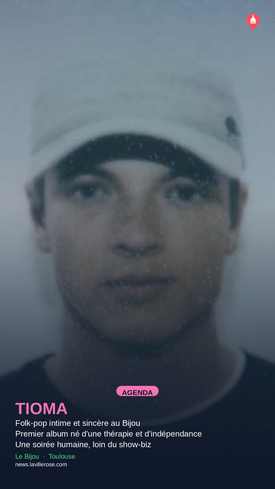
Tioma en concert au Bijou le 10 septembre
10 septembre 2026
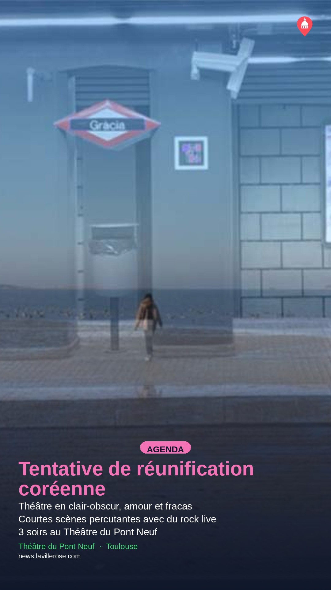
Spectacle théâtral sur l'amour et les liens humains au Pont Neuf
du 10 au 12 septembre 2026
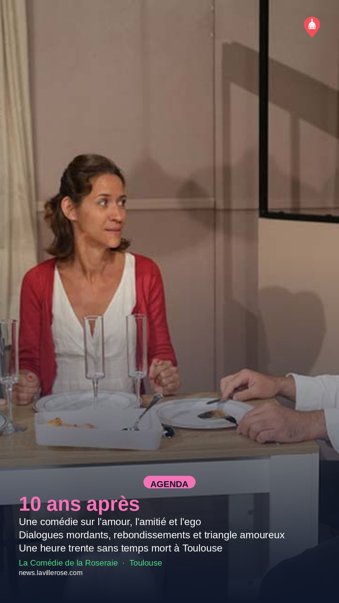
« 10 ans après » : une comédie pétillante à la Comédie de la Roseraie
10 septembre 2026
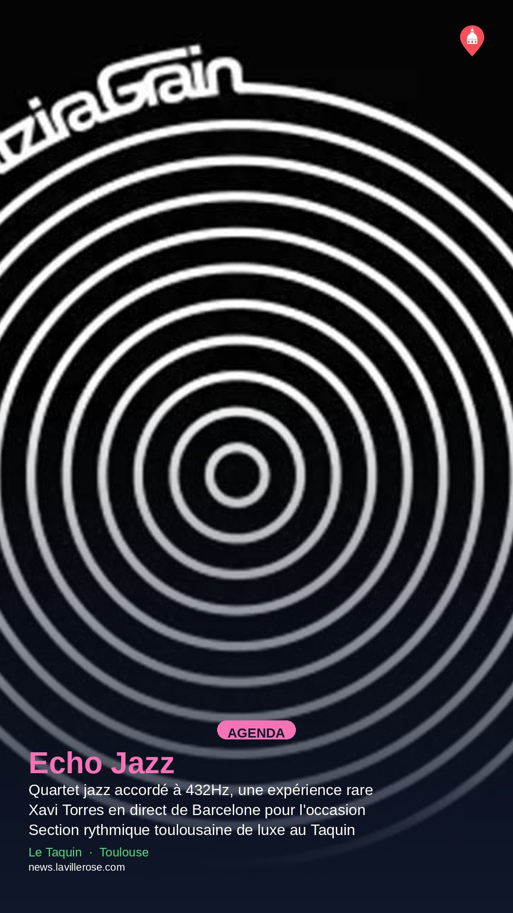
Echo Jazz : un quartet accordé à 432Hz au Taquin
10 septembre 2026